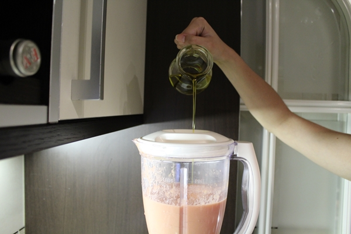

Comenzamos lavando los tomates, le quitamos el pedúnculo y los trituramos. Yo no suelo quitar la piel ni las pepitas porque creo que le da un toque rico aunque ahora lo quitaremos pasándolo por un chino.
Ahora lo pasamos por un chino o un colador para quitar todas las pepitas y pieles y así poder conseguir un salmorejo mucho más suave.
Incorporamos al tomate batido el pan y la dejamos que se empape bien durante unos 20 minutos. Esto lo haremos para que al batir lo hagamos con más facilidad aunque podemos batir directamente si tenéis una batidora potente. Lo mejor es usar un robot de cocina para el salmorejo.

Ahora incorporamos el medio ajo sin el corazón y el aceite. Como vemos en la foto es mejor incorporar un chorrito de aceite de oliva para que emulsione. Esto lo hacemos para que el salmorejo emulsione y coja textura. La verdad que si seguís estos pasos os saldrá un salmorejo perfecto.
